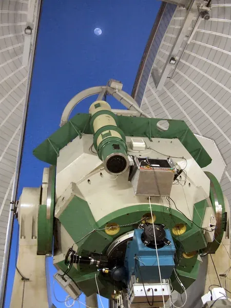

Copernico telescope

The Copernico 1.82 m on Mount Ekar (Asiago) is the largest optical telescope in Italy. It is operated by INAF – Astronomical Observatory of Padova and has been in use since 1973 for imaging, low- to medium-high resolution spectroscopy and polarimetry.
Its two regular instruments, AFOSC (spectrograph and camera) and the Echelle high-resolution spectrograph, are mounted in turn following the Moon cycle; AFOSC usually takes grey and dark time. EKARUS sits at the Coudé focus.
Source: INAF–OAPd, Copernico 1.82 m
Site and telescope
| Location | Mt. Ekar, Asiago (INAF – Asiago Astrophysical Observatory) |
|---|---|
| Coordinates | 45° 50′ 54.894″ N, 11° 34′ 08.397″ E, altitude 1376.2 m |
| Optical design | Classic Cassegrain, f/9 |
| Primary mirror (M1) | 182 cm, Schott Duran 50; re-aluminized periodically in the vacuum chamber at Mt. Ekar |
| Secondary mirror (M2) | Moves in focus (Z axis) only |
| Cassegrain focus | f/9, 12.6″/mm, about 20 cm from the rear flange; main focus |
| Nasmyth focus | 45° tertiary mirror, East side of the fork |
| Coudé focus | Hosts EKARUS; F/20.5 beam to the bench. Relay upgraded April 2026 with new L1 and L3 lenses |
| Pointing | Better than 1′ all-sky; absolute encoders with ≈ 4″ resolution |
| Dome | 15 m diameter, third floor; rotation and aperture driven by TPS, dome follows the telescope automatically |
Operating limits
| Altitude for EKARUS | 30°–88°. Below 30° dispersion degrades performance; above 80° take care, mechanical constraints near zenith. |
|---|---|
| Hard limit | Minimum altitude 20°, set by software and limit switch; never drive the telescope there. |
| Humidity | 90%: keep the dome closed. 95%: close immediately (automatic alert). |
| Wind | 10 m/s: keep the dome closed. |
Telescopio Copernico
Il Copernico da 1,82 m a Cima Ekar (Asiago) è il più grande telescopio ottico in Italia. È gestito dall’INAF – Osservatorio Astronomico di Padova ed è in uso dal 1973 per imaging, spettroscopia da bassa a medio-alta risoluzione e polarimetria.
I suoi due strumenti regolari, AFOSC (spettrografo e camera) e lo spettrografo Echelle ad alta risoluzione, vengono montati a turno seguendo il ciclo lunare; AFOSC di solito usa il tempo grigio e scuro. EKARUS si trova al fuoco Coudé.
Fonte: INAF–OAPd, Copernico 1,82 m
Sito e telescopio
| Posizione | Cima Ekar, Asiago (INAF – Osservatorio Astrofisico di Asiago) |
|---|---|
| Coordinate | 45° 50′ 54,894″ N, 11° 34′ 08,397″ E, quota 1376,2 m |
| Disegno ottico | Cassegrain classico, f/9 |
| Specchio primario (M1) | 182 cm, Schott Duran 50; rialluminato periodicamente nella camera a vuoto di Cima Ekar |
| Specchio secondario (M2) | Si muove solo in fuoco (asse Z) |
| Fuoco Cassegrain | f/9, 12,6″/mm, a circa 20 cm dalla flangia posteriore; fuoco principale |
| Fuoco Nasmyth | Specchio terziario a 45°, lato est della forcella |
| Fuoco Coudé | Ospita EKARUS; fascio F/20,5 verso il banco. Relay aggiornato ad aprile 2026 con le nuove lenti L1 e L3 |
| Puntamento | Migliore di 1′ su tutto il cielo; encoder assoluti con risoluzione ≈ 4″ |
| Cupola | 15 m di diametro, terzo piano; rotazione e apertura comandate da TPS, la cupola segue il telescopio automaticamente |
Limiti operativi
| Altezza per EKARUS | 30°–88°. Sotto i 30° la dispersione peggiora le prestazioni; sopra gli 80° fare attenzione, vincoli meccanici vicino allo zenit. |
|---|---|
| Limite fisso | Altezza minima 20°, impostata via software e da finecorsa; non portare mai il telescopio fin lì. |
| Umidità | 90%: tenere la cupola chiusa. 95%: chiudere subito (allarme automatico). |
| Vento | 10 m/s: tenere la cupola chiusa. |
Télescope Copernico
Le Copernico de 1,82 m sur le mont Ekar (Asiago) est le plus grand télescope optique d’Italie. Il est exploité par l’INAF – Observatoire astronomique de Padoue et est utilisé depuis 1973 pour l’imagerie, la spectroscopie de basse à moyenne-haute résolution et la polarimétrie.
Ses deux instruments réguliers, AFOSC (spectrographe et caméra) et le spectrographe Échelle à haute résolution, sont montés à tour de rôle selon le cycle lunaire ; AFOSC utilise en général le temps gris et sombre. EKARUS se trouve au foyer Coudé.
Source : INAF–OAPd, Copernico 1,82 m
Site et télescope
| Emplacement | Mont Ekar, Asiago (INAF – Observatoire astrophysique d’Asiago) |
|---|---|
| Coordonnées | 45° 50′ 54,894″ N, 11° 34′ 08,397″ E, altitude 1376,2 m |
| Conception optique | Cassegrain classique, f/9 |
| Miroir primaire (M1) | 182 cm, Schott Duran 50 ; réaluminé périodiquement dans la chambre à vide du mont Ekar |
| Miroir secondaire (M2) | Se déplace uniquement en focus (axe Z) |
| Foyer Cassegrain | f/9, 12,6″/mm, à environ 20 cm de la bride arrière ; foyer principal |
| Foyer Nasmyth | Miroir tertiaire à 45°, côté est de la fourche |
| Foyer Coudé | Accueille EKARUS ; faisceau F/20,5 vers le banc. Relais amélioré en avril 2026 avec les nouvelles lentilles L1 et L3 |
| Pointage | Meilleur que 1′ sur tout le ciel ; codeurs absolus de résolution ≈ 4″ |
| Coupole | 15 m de diamètre, troisième étage ; rotation et ouverture pilotées par le TPS, la coupole suit le télescope automatiquement |
Limites d’utilisation
| Hauteur pour EKARUS | 30°–88°. Sous 30°, la dispersion dégrade les performances ; au-dessus de 80°, attention aux contraintes mécaniques près du zénith. |
|---|---|
| Limite absolue | Hauteur minimale 20°, fixée par logiciel et par fin de course ; ne jamais y amener le télescope. |
| Humidité | 90 % : garder la coupole fermée. 95 % : fermer immédiatement (alerte automatique). |
| Vent | 10 m/s : garder la coupole fermée. |